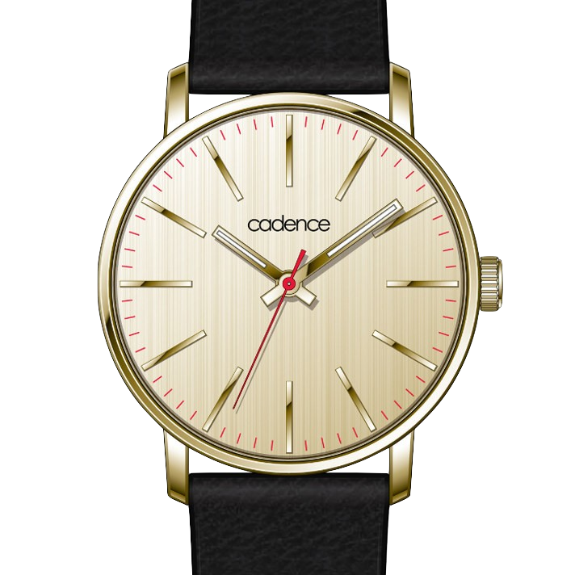

Brixton
Availability: Sold out
$250
A modern classic, the Brixton has a large, masculine gold-plated case with antique champagne-cream face to make a distinguished addition to any gentleman's wardrobe.
Details
Technical Specifications
- Gold stainless-steel 42mm case;Gold stainless-steel back and bezel
- Champagne dial, gold index, and red tracks
- Black leather strap with Gold buckle
- Water- and shock-resistant to 3ATM
- Japanese Miyota 2035 movement
- Three-year SR626SW battery